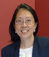

Faculty
GUEST FACULTY
| Biography Dr. Jhala serves as the Chief of the Pathology and Laboratory Service at CMC VAMC and is also a Professor of Clinical Pathology and Laboratory Medicine at the University of Pennsylvania, Philadelphia, PA. She has trained at institutes of repute as a resident and a fellow including at Baylor College of Medicine, MD Anderson Cancer Center, Houston, Texas, and at the University of Alabama School of Medicine. Dr. Jhala is recognized nationally and internationally for her pioneering work in the area of EUS and EBUS-FNA. Her published 'Jhala Algorithm' is utilized by pathologists and gastroenterologists to help diagnosis of pancreatic lesions. She has extensively contributed to peer review literature and continues to be invited nationally and internationally. She has been an NIH funded researcher on multicenter projects and serves as the local site investigator for the Million Veteran Project (MVP). |
| Biography Nirag Jhala is Professor, and Director of Anatomic Pathology for Temple University Hospital and Fox Chase Cancer Center at Temple University Hospital. He also serves as Laboratory Director for Laboratory Services for North Eastern and Episcopal Hospitals for Temple University Health System. His interest has been in the areas of endoscopic ultrasound guided fine needle aspiration, pancreaticobiliary and liver pathology. He has published over 100 peer reviewed publications. In addition, he has been coeditor for book on cytohistology of focal liver lesions. He has been involved with several funded grants including for his work on APC mutations in hepatocellular carcinoma funded by Sir Charles Barkley Foundation. |
FACULTY
Qasim AhmedMB,BS, Diplomate ABPath. |
|---|
Dr Qasim Ahmed is currently the Chief of Pathology at Fatima Memorial Hospital College of Medicine & Dentistry, Lahore, Pakistan. He completed Residency in Pathology followed by Fellowship in Cytopathology & Surgical Pathology at Case Western Reserve University, Cleveland, Ohio, USA obtaining American Board of Pathology in Anatomic and Clinical Pathology in 1996 and Cytopathology in 1997. His main interest is fine needle aspiration cytology. He was involved in running and administrating a busy FNA service at the SKM Cancer Centre in Lahore from 2002 to 2009. He was Director of Cytology at NUH Singapore from 2009 to 2017. He has delivered lectures at various scientific meetings and conducted pathology workshops locally and regionally. |
 Anjula ThomasMBBS, LRCP, MRCS, FRCPA, FAMSDepartment of Pathology, Parkway Health Laboratory |
|---|
Dr Anjula Thomas is the Medical Director and Consultant Anatomical Pathologist, Parkway Health Laboratories. The laboratories are under the umbrella of the largest private healthcare group in Southeast Asia.
She is member of Ministry of Health Specialist Training Committee (PathologyHistology Subcommittee) and part of the audit team of CervicalScreen Singapore. She is a Technical Assessor/Expert for the Singapore Accreditation Council-Singapore Laboratory Accreditation Scheme (SAC-SINGLAS). She is also part time lecturer at NUS, Department of Pathology.
Dr Thomas obtained her MBBS from the Kolkata Medical College, Kolkata, India, and her FRCPA from the Royal College of Pathologists, Australasia.
Her speciality interests are cytology (gynaecytological and non-gynaecytological), with special focus on respiratory and breast cytology. |
Ida Ismail-PrattMBChB (Glasgow), MRCOG, BSCCP, DFSRHConsultant, Division of Gynaecologic Oncology, Department of Obsetrics & Gynaecology, National University Hospital Consultant, Department of Obsetrics & Gynaecology, National University Hospital Consultant, Division of Gynaecologic Oncology, National University Cancer Institute, Singapore |
|---|
Dr. Ida Ismail-Pratt graduated from Glasgow University in 1997 and obtained her specialist qualifications (MRCOG) in 2010. She had 14 years' experience working in obstetrics & gynaecology in the United Kingdom and has come over to join the NUH Gynaecology Oncology Team working in particular in cancer screening and prevention. Apart from being a specialist in obstetrics & gynaecology, she is also a United Kingdom accredited colposcopist working within the NHS Cervical Screening Programme. Her interests are pre-invasive disease, cancer screening and prevention including multi-disciplinary approach to care of women with pre-invasive disease. |
Aileen WeeMB,BS, FRCPA, FRCPathProfessor and Senior Consultant Department of Pathology, National University Health System, Singapore |
|---|
Professor Wee trained at the Department of Pathology, National University of Singapore, and obtained her specialist degree from the Royal Colleges of Pathologists in Australasia and the United Kingdom. She is a member of the American Association for the Study of Liver Diseases and the Laennec Liver Pathology Society. She organizes regular cytopathology workshops and is recognized internationally for her work on liver FNAB for which she receives frequent invitations to lecture and conduct cytopathology workshops. She has published two books and co-authored chapters in MacSween's Pathology of the Liver, Odze and Goldblum's Diagnostic Liver Cytology, and WHO Classification of Tumours of the Digestive System.
Diana LimMBBS, FRCPath, FRCPASenior Consultant Department of Pathology, National University Health System, Singapore |
|---|
Dr Lim is currently a Senior Consultant pathologist at the Department of Pathology, National University Health System, Singapore and clinical tutor at the Yong Loo Lin School of Medicine, National University of Singapore. Her subspecialty and research interest lies in gynecologic and molecular pathology. She has published more than 40 peer-reviewed articles, abstracts and book chapters related to gynecological and molecular pathology. She is a member of the Cervical Screen Singapore advisory committee and quality assurance subcommittee and an affiliate member of the National Cancer Institute of Singapore (NCIS). |
Nga Min EnMBBS, FRCPath, FRCPA, FIACSenior Consultant Department of Pathology, National University Health System, Singapore |
|---|
Dr Nga Min En is a Senior Consultant Pathologist and Associate Professor in the Department of Pathology of the National University Health System. She is a Fellow of both the Royal Colleges of Pathologists of Australasia and the United Kingdom, as well as the International Academy of Cytology. She has a subspecialty interest in cytopathology, and her research interests include thyroid cancer and non-gynaecologic cytopathology. Dr Nga has been a speaker at several regional clinical and pathology conferences. Dr Nga also has a keen interest in undergraduate and postgraduate teaching and has developed innovative digital teaching material such as the Virtual Pathology Museum and Pathweb, an online undergraduate pathology teaching resource. |
Seet Ju EeMB,BCh, FRCPath (UK)Senior Consultant Department of Pathology, National University Health System, Singapore |
|---|
Dr Seet Ju Ee graduated from the University of Cambridge, UK in 1995. Her Histopathology training was done mainly in London, UK. She completed her specialist training (UK Certificate of Completion of Specialist Training) in 2003 and is a Fellow of the Royal College of Pathologists, UK (FRCPath). Dr Seet joined the department in 2009. Dr Seet has subspecialist experience and interest in Cytopathology and Lung/thoracic pathology. She is actively involved in all aspects of medical education in the department, both undergraduate and postgraduate. |

Shaun GohMB,BS, FRCPAConsultant Department of Pathology, National University Health System, Singapore |
|---|
Dr Shaun Goh is a Consultant and Cytopathology Section Director at the Department of Pathology, National University Hospital. His clinical interests lie in Cytopathology and Renal Pathology. He graduated with MBBS from the University of Melbourne, Australia and obtained his specialist qualifications in histopathology from the Royal College of Pathologists of Australasia.
He received the Academic Medicine Development Award (AMDA) and undertook sub-specialty training in renal pathology at the department of pathology at Cedars Sinai Medical Center, Los Angeles, USA.
Wu BingchengMBBS, FRCPathSenior Resident Department of Pathology, National University Health System, Singapore |
|---|
Department of Pathology, National University Health System, Singapore
Dr Wu Bingcheng is a Senior Resident at the Department of Pathology, NUH. He obtained his MBBS from the National University of Singapore. He is currently undergoing his pathology training in Singapore and is a Fellow of the Royal College of Pathologists, United Kingdom.
His clinical interests are in Head and Neck Pathology as well as Fine Needle Aspiration Cytology of the Thyroid Gland, Salivary Glands, and Lymph Nodes. He has published several peer reviewed papers in histopathology. |

Kee Hua ChengCT ASCP, CSMLSCytotechnologist Department of Pathology, National University Health System, Singapore |
|---|
Kee Hua Cheng is supervisor of the Cytology Laboratory at the National University Hospital, where she leads a team of 6 cytotechnologists. She provides training and development for all the cytotechnologists at a busy laboratory which provides Fine Needle Aspiration services as well as processing and screening of gynaecological and non gynaecological samples. She also conducts education courses for trainee cytotechnologists.
Kee Hua Cheng received her Bachelors Of Science Degree in Biology from Simon Fraser University, Canada and has been a practising cytotechnologist for over 25 years having trained in Canada at the Cancer Control Agency of British Columbia. Before taking on her current role, Ms Kee has worked abroad in Canada for more than 15 years. She has also worked briefly at the Singapore General Hospital. Her area of specialisation is in gynaecological screening.
Vanessa SohCTIACCytotechnologist Department of Pathology, National University Health System, Singapore |
|---|
Ms Soh has been a senior cytotechnologist at the Department of Pathology, National University Hospital, Singapore for the past 39 years. She has had vast experience as a screener in gynecological and non-gynecological cytology, including providing rapid on-site FNA cytology service. She has also worked in the histopathology section. Vanessa has conducted hands-on FNA cytology workshops in Indonesia and Singapore. She was in charge of the laboratory quality management and quality control, as well as the development of the laboratory information system. She is actively involved in the organization and teaching programs, particularly on health and safety issues, of our biannual Diagnostic Cytopathology Workshops. Currently, she is mining data for clinical audit and research, and digitalizing histological and cytological slides to build up our department’s education resource.
|
Lim Gaik LanMMedSc (Cytology), CTIACTCytotechnologist Department of Pathology, National University Health System, Singapore |
|---|
Lim Gaik Lan is a senior cytotechnologist at the Department of Pathology, National University Hospital, Singapore since 1991. She has vast experience in FNA cytology, including rapid on-site assessment of EUS/EBUS and CT-guided cytology. She runs training programs on gynecological and non-gynecological cytology for Pathology residents and visiting cytotechnologists. She has attended international and regional cytology workshops and conferences, including poster presentations in US CAP, Australia and at local/regional level. Ms Lim has actively participated in a regional hands-on EUS-FNA workshop in Mumbai, India. She is currently working with Associate Professor Nga Min En to create the contents for an online cytology teaching resource, Cytoweb (https://blog.nus.edu.sg/paps/). She has been actively involved in organizing and teaching at our biannual Diagnostic Cytopathology Workshop.
|
Xu XiaMBBS, China. CT(IAC)Cytotechnologist Department of Pathology, National University Health System, Singapore |
|---|
Ms Xu is senior cytotechnologist at the Department of Pathology, National University Hospital, Singapore. She obtained her Bachelor’s Degree of Medicine from the School of Medicine, Xi’an Jiao Tong University, China in 1986 (previously called Xi’an Medical University) and was an M.D. in China. She obtained her CT(IAC) in 2001.
She is currently assistant to the supervisor in running the cytology laboratory and a QC officer. She is a trainer and prepares new cytotechnologists for the International Academy of Cytology (IAC) Examination. Her interests and expertise include teaching, preparation of teaching materials, secondary screening and on-site evaluation of FNA cytology. Ms Xu has contributed extensively to the previous Diagnostic Cytopathology Workshops as speaker, tutor and demonstrator.
|
Tan Zhen QinBSc, CT(IAC)Department of Pathology, National University Health System, Singapore |
|---|
Zhen Qin is a cytotechnologist in the Department of Pathology at the National University Hospital, Singapore. She has been practicing cytology since she joined the department in March 2006. She is the lead statistician for cytology section as well as assisting with analysis of the fee costing of cytology tests. She is also rostered to cross-train at the Diagnostic Molecular Oncology Centre performing Direct Sequencing, Microsatellite Instability Analysis (MSI) and Clonality Analysis Assays.
She is registered with IAC since 2010 after passing the qualifying examination. This is the 8th time that she will be participating in the Cytology Workshop conducted by NUH.
|
Irene LeeBSc, CMIAC, CT(ASCPi)CMCytotechnologist Department of Pathology, National University Health System, Singapore |
|---|
Ms Irene Lee is a senior Medical Technologist attached to the Cytology Section of the Department of Pathology, National University Hospital, Singapore. She joined the department in 2008 after graduating from the National University of Singapore. She completed her IAC and ASCPi examinations in 2011 and 2018, respectively. Irene has vast experience in screening gynecological and non-gynecological cytological material. She routinely attends to rapid on-site examinations for fine needle aspiration cytology, image-guided biopsies, and EBUS- and EUS-guided aspiration cytology. She takes an active role in the department's cytopathology training for in-house and visiting cytotechnologists and residents. Irene has actively participated in the Diagnostic Cytopathology Workshops organized by the Department of Pathology at NUH as committee member, speaker, instructor in FNA hands-on laboratory sessions and poster presenter. She is enthusiastic to upgrade her knowledge in Cytology and has recently attended the IAC tutorial in Hong Kong in 2017.
|
Jocelycn ChungBSC, CT- IACCytotechnologist Department of Pathology, National University Health System, Singapore |
|---|
Jocelycn is a cytotechnologist in the Department of Pathology at the National University Hospital, Singapore. She has been practicing cytology since she joined the department in June 2013. She is the operations officer in the cytology section ensuring the smooth running of laboratory services. In addition to this she is also in charge of arranging CME (continuing medical education) slides sessions with the pathologists for the cytotechnologists and the resident pathologists.
She is registered with IAC since 2017 after passing the qualifying examination. This is the 3rd time that she will be participating in the Cytology Workshop conducted by NUH.
|
Lim Li YinBSc, CT(IAC)Cytotechnologist Department of Pathology, National University Health System, Singapore |
|---|
Li Yin is a cytotechnologist in the Department of Pathology at the National University Hospital, Singapore. She has been practicing cytology since she joined the department in January 2014. She is the safety coordinator for the Pathology Laboratory as well as the Cytology Safety Lead. She looks after all safety aspects of the laboratory which covers conducting safety audits, writing risk assessments for cytology, conducting investigation and providing reports of incidents (e.g. slips and falls/chemical spillage) that occur within the clinical histopathology laboratory.
She is registered with IAC since 2017 after passing the qualifying examination. This is the third time that she will be participating in the Cytology Workshop conducted by NUH.
|
Bridget WongCytotechnologistDepartment of Pathology, National University Health System, Singapore |
|---|
Bridget Wong is a trainee cytotechnologist in the Department of Pathology at the National University Hospital, Singapore. She has been practicing cytology since she joined the department in June 2016. Her additional duties for cytology are collecting, organising and archiving of teaching material/slides, she is in-charge of the gynecology and fine needle aspiration teaching sets.
She will be sitting for her IAC qualifying examination at the end of 2019. She is also concurrently studying for her BSC as a part-time candidate. This is the second time that she will be participating in the Cytology Work Shop conducted by NUH.
|